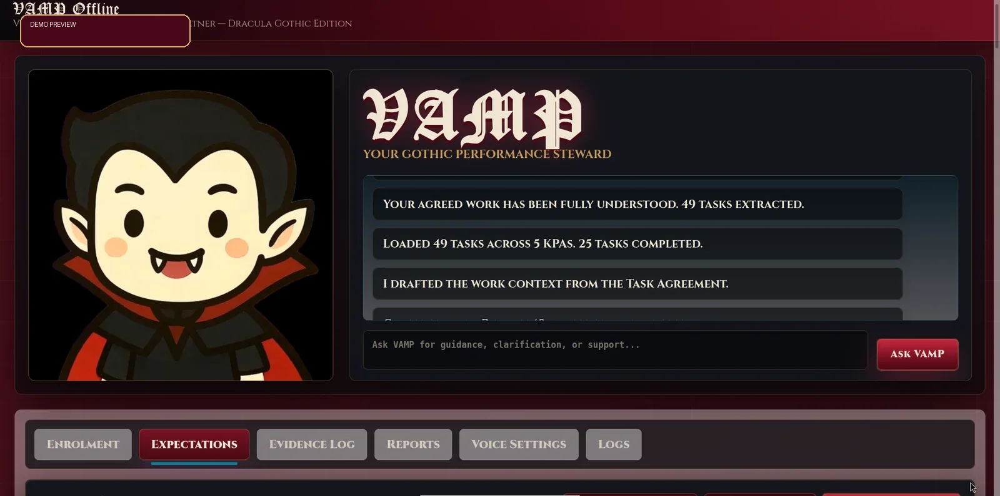
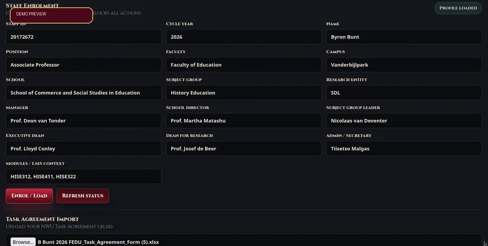
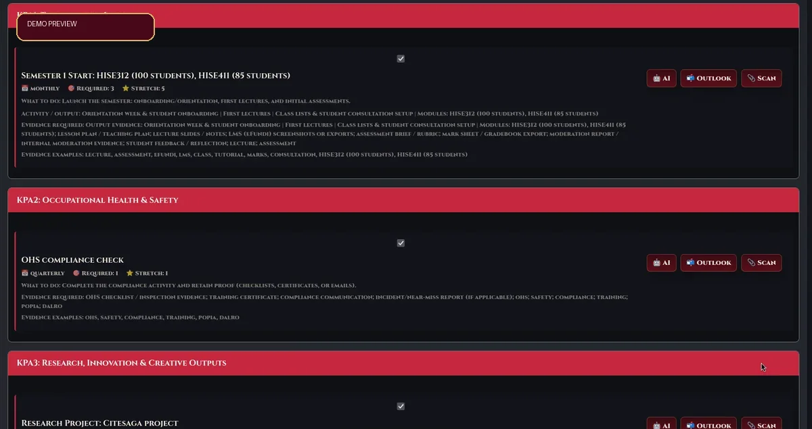
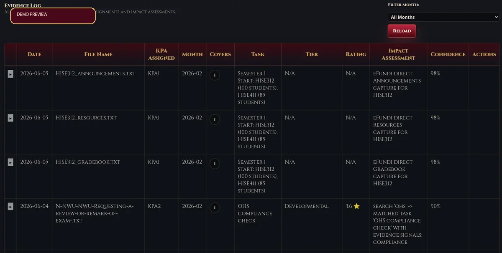
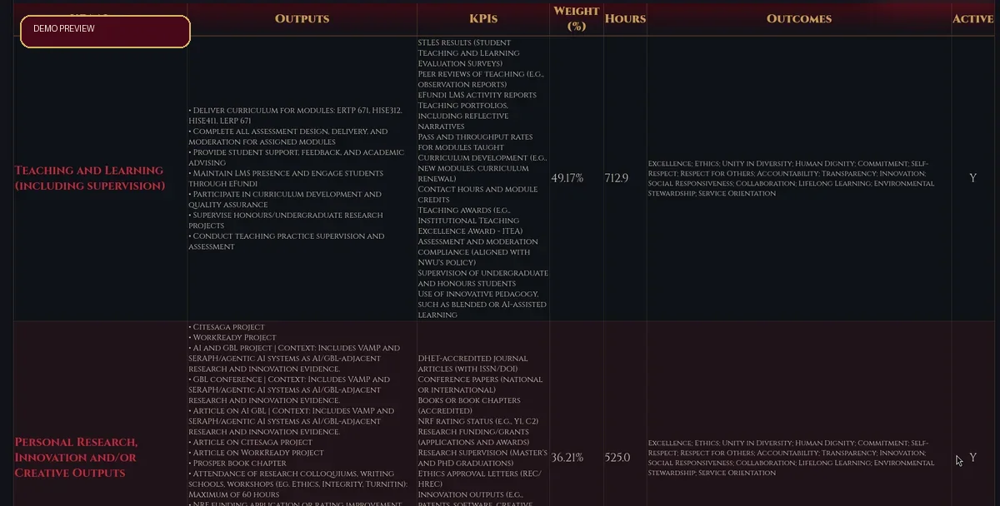

Offline-first
Work locally when connectivity or institutional systems get dramatic.
VAMP — Virtual Academic Management Partner
VAMP turns task agreements, expectations, evidence files, reporting notes, and monthly progress into one structured, audit-friendly workspace for academic staff and managers.

VAMP says: “Invite your evidence in. I’ll keep it from wandering the crypt.”
Work locally when connectivity or institutional systems get dramatic.
Link each performance claim to files, tasks, impact notes, and confidence.
Transform formal agreements into trackable expectations and work contexts.
Create cleaner reports and defensible records for review conversations.
Explore VAMP
The homepage cards below use the current VAMP interface as visual proof-of-life: dark, structured, practical, and yes, tastefully undead.
Central command for progress, KPAs, tasks, and VAMP guidance when the paperwork bats start circling.
See it in action
Capture cycle year, faculty, campus, reporting lines, modules, and staff context so the system starts with order.
Prepare rollout
Manage KPAs, required evidence, monthly progress, Outlook evidence, scans, and AI-supported reflection prompts.
View use cases
Organise evidence files, assign them to KPAs and tasks, evaluate impact, and keep confidence visible.
Watch demo
Review weighted KPAs, outputs, KPIs, hours, outcomes, and active agreements in a comprehensive, manager-friendly overview.
Request accessDemo walkthrough
Show potential buyers how VAMP imports a task agreement, builds expectations, links evidence, and prepares cleaner reporting conversations.
Use cases
Keep teaching, research, service, admin, and evidence streams in one structured system.
Support clearer review meetings with task-level progress and evidence-backed claims.
Reduce the yearly scramble by building evidence trails continuously, not after midnight with coffee goblins.
Why VAMP?
Centralise agreements, tasks, and evidence so nothing important vanishes behind email curtains.
Make performance claims more credible by tying them to concrete evidence and impact notes.
Prepare structured, review-ready narratives that explain contribution, workload, and progress.
Installer access
R400 once off payment to the following account grants you lifetime access to the VAMP system including support. Email the proof of payment to buntbyron@gmail.com and you will receive the download link.
ABSA Bank
Cheque account
Account number: 9156687464
Branch: Three Rivers
Branch code: 632005
Ready to invite VAMP in?
Once your proof of payment is received, the VAMP download link and setup guidance will be sent to you by email.